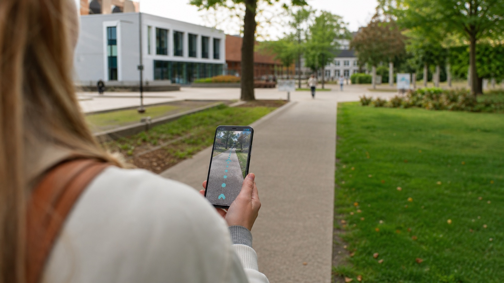

Najaar 2025
We Walk prototype: wandelen door een AR-route op de campus
Binnen het We Walk-project was er nog geen publiek te gebruiken pilot-app. Wel ontwikkelde een student Digital Sciences een AR-prototype dat liet zien hoe je via een smartphone een augmented reality-route over de campus van Tilburg University zou kunnen lopen.
Het prototype is ontwikkeld door een student Digital Sciences van Tilburg University, onder begeleiding van het team rond de Digital Interventions Incubator. Deze eerste technische verkenning laat zien hoe wandelen, campusomgeving en digitale interactie samen kunnen komen in een laagdrempelige AR-ervaring.
Tijdens de route verschijnen digitale elementen in de echte omgeving op het scherm van de smartphone. Daarmee kan wandelen speelser en concreter worden gemaakt: niet alleen een stappendoel, maar een route die onderweg iets laat zien of vraagt.
Voor We Walk is dit prototype vooral een tastbare eerste stap. Het helpt om te onderzoeken hoe augmented reality mogelijk gebruikt kan worden om bewegen aantrekkelijker te maken voor mensen die extra ondersteuning kunnen gebruiken om in beweging te komen en te blijven.
Bron: projectinformatie We Walk, 2025; Tilburg University, Digital Interventions Incubator.